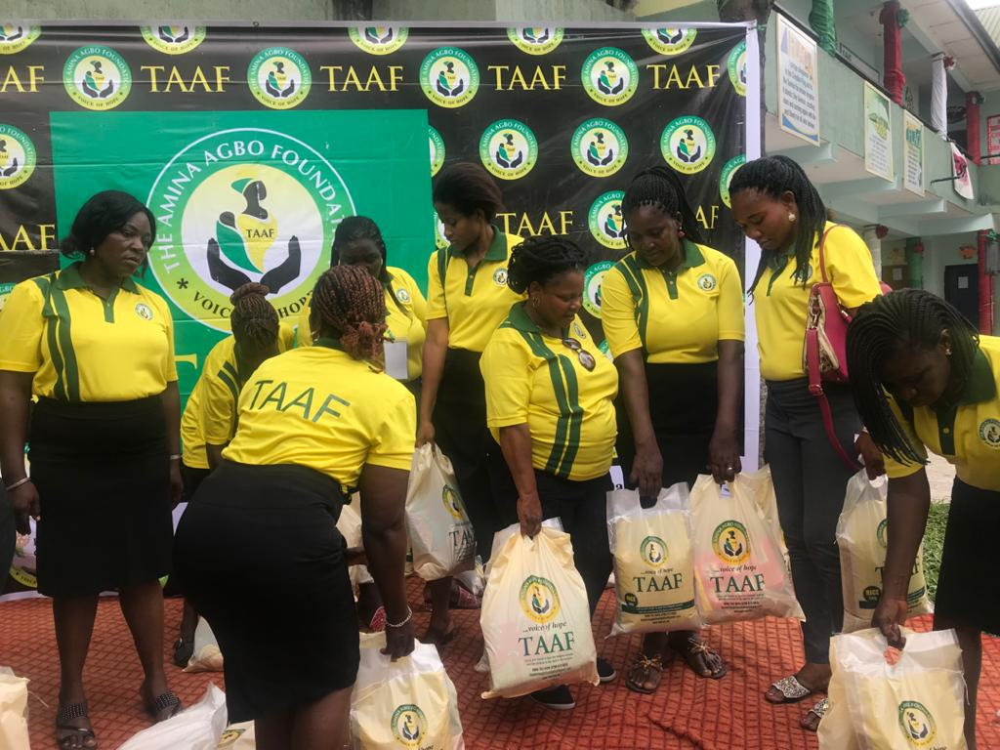
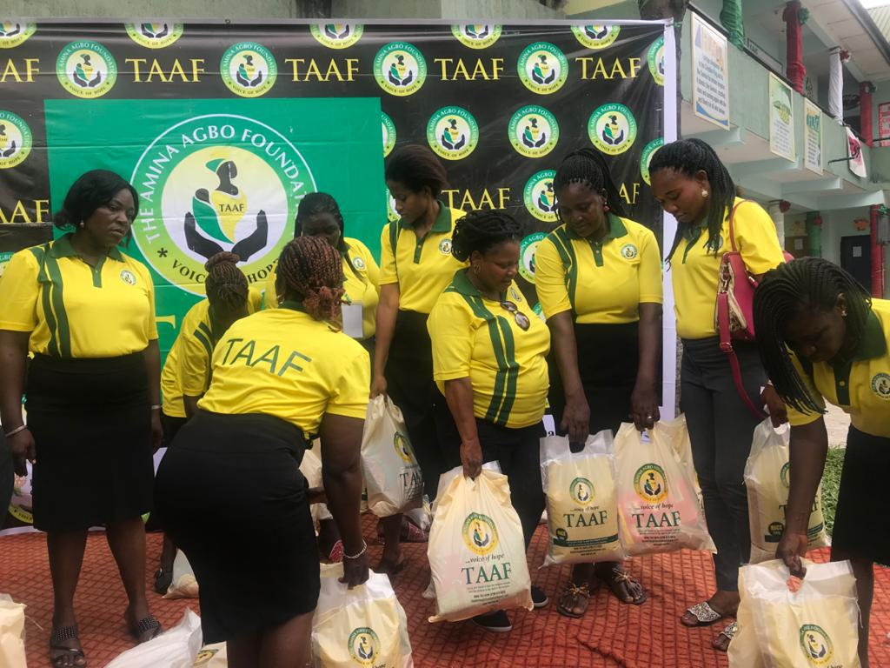

The DORCAS Project
Here we provide food and clothes to indigent families, especially during festive seasons, and also give out loans and grants to women in need after thorough screening of applicants. Women will be grouped into cooperatives for effectiveness.
 


The EHI Project
We shall organize seminars, conferences and skill acquisition sessions for women to further enhance their productivity. Indigent women need to be given the opportunity to take a break from the task of daily living to relax and learn new things.


The J-NILE Project
Here we intend to render necessary assistance to youths who are in the juvenile system, organize youth camps to educate and prevent the youth from straying from the right path and establish a book club in schools
The TALITAKUMI Project
Our focus here will be on health awareness and health checks. We will partner with other organizations to bring relief to those with serious ailments.
The MIRIAM Project
The Miriam project seeks to embark on training and retraining of handlers of children in the educational sector and offer scholarships to deserving indigent children.
Most of the trainings/seminars are highly subsidised because the resource persons are volonteers who are seasoned in their field. It is part of their contribution to the foundation. The little revenue that is accured from such seminars are chanelled to the empowerment of indigent women and their children.